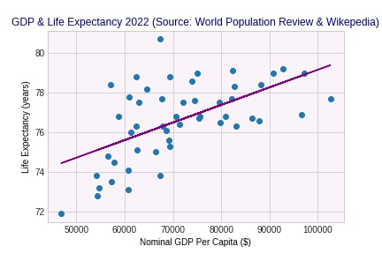
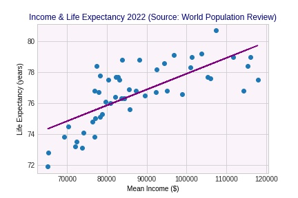

This regression outlines the inefficient nature of the US healthcare system. Despite spending over 2 percentage points more of their GDP than any other country, the US’ average life expectancy is below 80 years and is falling. As an explanation for the lack in outcome from expenditure, this project aims to present data analysing the extent of inequalities in health between demographics.
I used the World Bank Data python library to download the World Bank API - the data will refresh automatically when the code is run. I cleaned and merged the 2 datasets via Pandas in colab. I couldn’t use a loop to download both datasets at once, so I repeated the code.
LOCATION - INSURANCE
The most notable way the US differs from other industrialized countries is the absence of universal health insurance coverage. This choropleth map aims to show the geographical inequality in uninsured rates across counties. There seems to be a disparity between the north and south. Texas sees uninsured rates of up to 37%; Massachusetts as low as 3%. However, South Dakota does still see uninsured rates above 20%.
I downloaded the ASPE CSV locally and used the geoJSON from GitHub to combine both datasets in Vega-Lite. Each county name cell had a code for its state. To clean, I extracted the characters from the string in excel.
RACE - INFANT MORTALITY
This line chart aims to show how your race impacts your chance of survival before you are even born. By 2016, having a Black/African American mother would increase your infant mortality rate by up to over 5%, reaching the average of less economically developed ‘Upper Middle Income’ countries.
This data was accessed via the CDC API and a loop over the Fred API, making It replicable. I converted both JSONs to csv, as it was easier to clean and merge the data in python (pandas) and excel. The FRED data was as a string in one cell, so I used excel to extract the characters from the string.
AGE AND GENDER - DISABILITY AND HEART DISEASE
This trellis chart aims to explore the extent to which your gender and location impact disability. Rates are relatively even between men and women, but the difference across states can vary by over 10 percentage points. However, this could be attributed to lack of diagnoses in some states.
I downloaded the new CDC locally and cleaned the data in excel. Once, I created the chart, the y axis had combined both male and female values and I couldn’t put them side by side. To solve this issue, I added a column in the csv and renamed ‘female’ as ‘both’, whilst the tooltip shows each gender’s rate.
This chart shows how the chance of having heart disease differs by almost 30% depending on whether you are an 18-44 woman or 65+ man. Whilst this may be due to biology, rather than inequality, research should be conducted to narrow the gap and educate older men on how to reduce heart disease.
I downloaded the data locally from CDC and used pandas to clean and re-shape it to a tidy, long-form format.
EDUCATION - SUICIDE
This bubble chart aims to show the link between receiving at least a bachelor’s degree and suicide rates across states. It’s clear that there’s a link between higher rates of education and lower suicide rates. There doesn’t seem to be an obvious link between expenditure and suicide rates, mirroring the lack of correlation between the US’ aggregate expenditure and life expectancy.
The population data is from the US Census Bureau’s API. The education rates were scraped from Wikipedia using pandas. I cleaned by removing dollar signs and asterisks in excel. The rest was downloaded locally, cleaned and merged through Python Pandas. I dropped extra regions and converted % values to numerical in excel.
INCOME AND WEALTH - LIFE EXPECTANCY
These regressions present the link between the mean income and GDP on state life expectancy. Mean income can explain 53% of the variance in life expectancy; GDP has a weaker correlation, only explaining 33%. Perhaps this links to a lack of national health service - it doesn’t matter if your state is wealthier if you cannot pay for your own healthcare.


The data on GDP was scraped using beautiful soup in python from Wikipedia. The rest was downloaded locally from the World Population Review. I used sklearn inside python to apply a supervised machine learning algorithm. I transformed the input and target data into the standardised X matrix and y vector form to create both regressions.
CONCLUSION
Despite national initiatives, including the Action to End Health Disparities, there are still persistent and pervasive disparities in health across demographics. According to the American Journal of Public Health, 45,000 annual deaths are linked to lack of health insurance. Further research should investigate how the government can implement policies to promote health equality and improve life expectancy of all American citizens.
Data References:
Worldbank.org. (2022). Life expectancy and Health Expenditure | Data. [online] Available at: https://data.worldbank.org/indicator/SP.DYN.LE00.IN and https://data.worldbank.org/indicator/SH.XPD.CHEX.GD.ZS%202..
ASPE. (2021). State and Local Estimates of the Uninsured Population in the U.S. Using the Census Bureau’s 2021 American Community Survey. [online] Available at: https://aspe.hhs.gov/reports/state-county-local-estimates-uninsured-population.
NCHS/DAE (2021). Infant, neonatal, postneonatal, fetal, and perinatal mortality rates, by detailed race and Hispanic origin of mother: United States. [online] Cdc.gov. Available at: https://data.cdc.gov/NCHS/Infant-neonatal-postneonatal-fetal-and-perinatal-m/nfuu-hu6j.
Stlouisfed.org. (2020). Infant Mortality Rate for Upper Middle and High Income Countries. [online] Available at: https://fred.stlouisfed.org/series/SPDYNIMRTINUMC and https://fred.stlouisfed.org/series/SPDYNIMRTINHIC.
Disabilitystatistics.org. (2018). Disability Statistics. [online] Available at: https://www.disabilitystatistics.org/reports/acs.cfm?statistic=2.
CDC (2022). Heart Disease Facts. [online] Centers for Disease Control and Prevention. Available at: https://www.cdc.gov/heartdisease/facts.htm .
CDC, (2023). Stats of the State - Suicide Mortality. [online] Available at: https://www.cdc.gov/nchs/pressroom/sosmap/suicide-mortality/suicide.htm.
Wikipedia Contributors (2022). List of U.S. states and territories by educational attainment. [online] Wikipedia. Available at: https://en.wikipedia.org/wiki/List_of_U.S._states_and_territories_by_educational_attainment.
Worldpopulationreview.com. (2023). US States - Ranked by Population 2023. [online] Available at: https://worldpopulationreview.com/states.
US Census Bureau (2022). State Population Totals and Components of Change: 2020-2022. [online] Census.gov. Available at: https://www.census.gov/data/tables/time-series/demo/popest/2020s-state-total.html.
Worldpopulationreview.com. (2023). Life Expectancy by State 2023. [online] Available at: https://worldpopulationreview.com/state-rankings/life-expectancy-by-state.
Wikipedia Contributors (2022). List of U.S. states and territories by GDP. [online] Wikipedia. Available at: https://en.wikipedia.org/wiki/List_of_U.S._states_and_territories_by_GDP